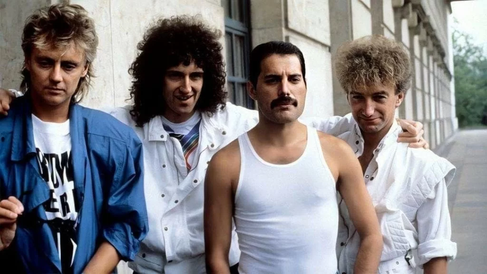
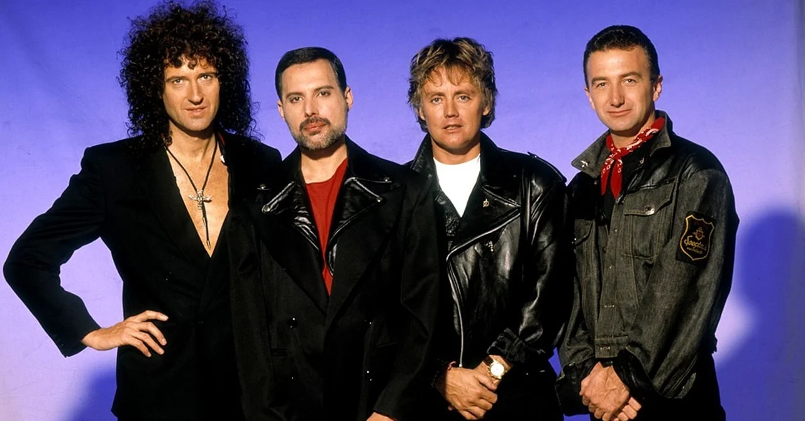

Queen foi uma banda britânica de rock, fundada em 1970 e ativa, sob sua formação clássica, até 1991. O grupo, formado por Brian May (guitarra e vocais), Freddie Mercury (vocais e piano), John Deacon (baixo) e Roger Taylor (bateria e vocais), é frequentemente citado como um dos expoentes do seu estilo, também sendo um dos recordistas de vendas de discos a nível mundial. A música da banda também é conhecida por ser altamente eclética, variando entre várias vertentes do rock.

Originalmente, a banda surgiu a partir do trio Smile, formado por Brian May, Roger Taylor e o baixista Tim Staffell. Com o fim do conjunto, Freddie Mercury e John Deacon, juntamente com May e Roger, estabeleceram a formação de um novo grupo em meados de 1970. Os seus dois primeiros álbuns alcançaram pouco sucesso, até que ganhou popularidade internacional por meio de Sheer Heart Attack (1974) e, principalmente, por A Night at the Opera (1975), cujos singles "Bohemian Rhapsody" e "You're My Best Friend" alcançaram bons desempenhos. Mais tarde, a popularidade do quarteto estendeu-se com News of the World, em 1977, devido aos hits "We Will Rock You" e "We Are the Champions", bem como com "Crazy Little Thing Called Love" e "Another One Bites the Dust", de The Game, lançado em 1980.

Durante a década de 1980, o Queen passou a adotar sintetizadores nas suas músicas, e apesar de alguns sucessos como "Under Pressure", a banda recebeu fortes críticas da mídia especializada, perdeu grande parte de sua popularidade em território norte-americano, e passou por crises internas. Em meio às críticas, a banda ainda lançou sucessos: O álbum The Works (1984) conteve os singles "Radio Ga Ga" e "I Want to Break Free", que alcançaram notoriedade no Reino Unido e em países da América do Sul, como o Brasil e Argentina. Em 1985, o conjunto realizou uma das suas performances mais memoráveis no evento Live Aid, e em 1986 a última turnê. Em 1987, o vocalista Freddie Mercury contraiu o vírus do HIV. Com isso, a banda continuou produzindo trabalhos que se tornaram os últimos registros em vida de seu cantor. The Miracle (1989) e Innuendo (1991) foram melhor recebidos que os anteriores, e também ganharam avaliações mais positivas após a morte de Freddie. Brian, Roger e John trabalharam em algumas faixas arquivadas durante dois anos e, com isso, foi lançado o último trabalho inédito do quarteto, Made in Heaven (1995). Em 1997, o baixista John Deacon aposentou-se do mundo musical.
Nos anos seguintes, Brian May e Roger Taylor seguiram carreiras a solo, tocaram com vários músicos convidados e, com o repertório do Queen, chegaram a se apresentar com artistas como Elton John. Como shows com o nome da banda, destacam-se as parcerias feitas com Paul Rodgers e Adam Lambert, com quem formaram, respectivamente, os supergrupos Queen + Paul Rodgers (entre 2004 a 2009) e Queen + Adam Lambert (de 2011 aos dias atuais). A banda já vendeu mais de trezentos milhões de discos ao redor do mundo, tendo lançado quinze álbuns inéditos, várias coletâneas e trabalhos em vídeo. O grupo foi incluído no Rock and Roll Hall of Fame em 2001 e todos os seus integrantes foram introduzidos ao Songwriters Hall of Fame em 2003. Além disso, ganhou uma estrela no Passeio da Fama em Hollywood em 2005 e é apontado como influência para vários artistas do cenário rock e pop, bem como foi tema do musical We Will Rock You e do filme Bohemian Rhapsody, de 2018.
